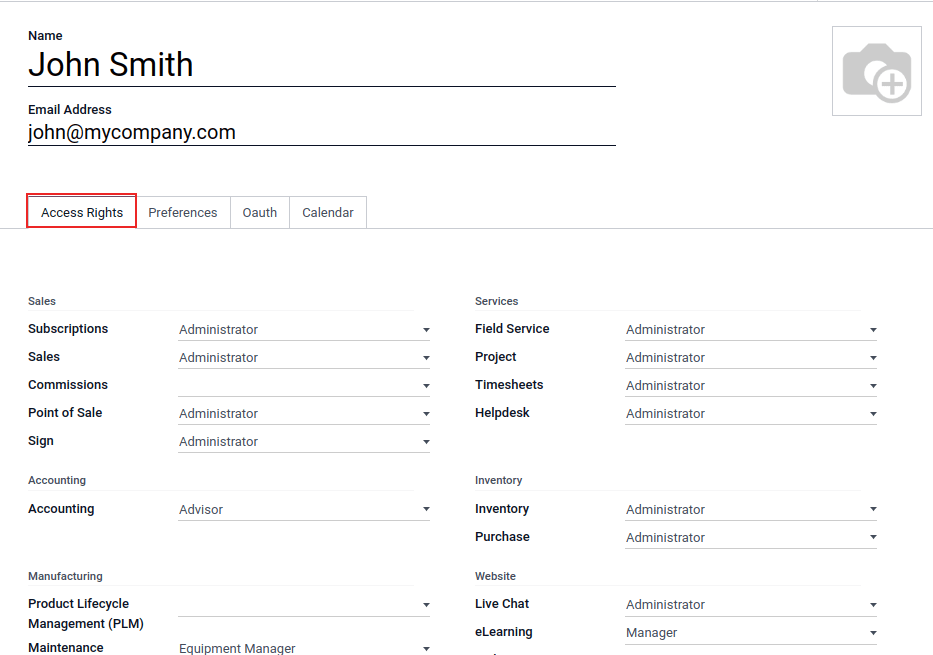
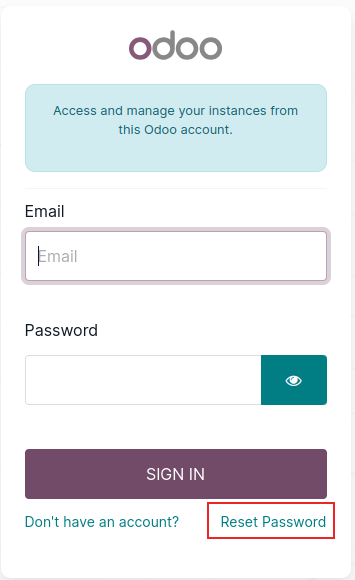

Users¶
Odoo defines a user as someone who has access to a database. An administrator can add as many users as the company needs and, in order to restrict the type of information each user can access, rules can be applied to each user. Users and access rights can be added and changed at any point.
Add individual users¶
To add new users, navigate to , and click on Create.

Fill in the form with all the required information. Under the Access Rights tab, choose the group within each application the user can have access to.
The list of applications shown is based on the applications installed on the database.
After filling out all the necessary fields on the page, click Save. An invitation email is automatically sent to the user, using the email in the Email Address field. The user must click on the link included in the email to accept the invitation, and to create a database login.

Warning
If the company is on a monthly subscription plan, the database automatically updates to reflect the added users. If the company is on a yearly or multi-year plan, an expiration banner appears in the database. An upsell quotation can be created by clicking the banner to update the subscription. Alternatively, send a support ticket to resolve the issue.
User type¶
With the developer mode activated, User Type can be selected from the Access Rights tab of the user form, accessible via .
There are three types of users: Internal User, Portal, and Public.
Tip
Users are considered internal database users. Portal users are external users, who only have access to the database portal to view records. See the documentation on Portal access.
Public users are those visiting websites, via the website’s frontend.
The Portal and Public user options do not allow the administrator to choose access rights. These users have specific access rights pre-set (such as, record rules and restricted menus), and usually do not belong to the usual Odoo groups.
Deactivate users¶
To deactivate (i.e. archive) a user, navigate to . Then, tick the checkbox to the left of the user(s) to be deactivated.
After selecting the appropriate user to be archived, click the ⚙️ Actions icon, and select Archive from the resulting drop-down menu. Then, click OK from the Confirmation pop-up window that appears.
Danger
Never deactivate the main/administrator user (admin). Making changes to admin users can have a detrimental impact on the database. This includes impotent admin, which means that no user in the database can make changes to the access rights. For this reason, Odoo recommends contacting an Odoo Business Analyst, or our Support Team, before making changes.
Error: too many users¶
If there are more users in an Odoo database than provisioned in the Odoo Enterprise subscription, the following message is displayed.

When the message appears, the database administrator has 30 days to act before the database expires. The countdown is updated every day.
To resolve the issue, either:
Add more users to the subscription by clicking the Upgrade your subscription link displayed in the message to validate the upsell quotation, and pay for the extra users.
Deactivate users, and reject the upsell quotation.
Warning
If the company is on a monthly subscription plan, the database automatically updates to reflect the added users. If the company is on a yearly or multi-year plan, an expiration banner appears in the database. An upsell quotation can be created by clicking the banner to update the subscription. Alternatively, users can send a support ticket to resolve the issue.
Once the database has the correct number of users, the expiration message disappears automatically after a few days, when the next verification occurs.
Password management¶
Password management is an important part of granting users autonomous access to the database at all times. Odoo offers a few different methods to reset a user’s password.
Tip
Odoo has a setting to specify the length needed for a password. This setting can be accessed by
navigating to section, and entering the desired
password length in the Minimum Password Length field. By default the value is 8.

Reset password¶
Sometimes, users might wish to reset their personal password for added security, so they are the only ones with access to the password. Odoo offers two different reset options: one initiated by the user to reset the password, and another where the administrator triggers a reset.
Enable password reset from login page¶
It is possible to enable/disable password resets directly from the login page. This action is completed by the individual user, and this setting is enabled by default.
To change this setting, go to section, activate Password Reset, and then click Save.

On the login page, click Reset Password to initiate the password reset process, and have a reset-token sent to the email on file.
Send reset instructions¶
Go to , select the user from the list, and click on Send Password Reset Instructions on the user form. An email is automatically sent to them with password reset instructions.
Note
The Send Password Reset Instructions button only appears if the Odoo invitation email has already been confirmed by the user. Otherwise, a Re-send Invitation Email button appears.
This email contains all the instructions needed to reset the password, along with a link redirecting the user to an Odoo login page.
Change user password¶
Go to , and select a user to access its form. Click on the ⚙️ Actions icon, and select Change Password from, the resulting drop-down menu. Enter a new password in the New Password column of the Change Password pop-up window that appears, and confirm the change by clicking Change Password.

Note
This operation only modifies the password of the users locally, and does not affect their odoo.com account.
If the odoo.com password needs to be changed, use the send the password reset instructions. Odoo.com passwords grant access to the My Databases page, and other portal features.
After clicking Change Password, the page is redirected to an Odoo login page where the database can be re-accessed using the new password.
Multi Companies¶
The Multi Companies field on a user form allows an administrator to provide access to multiple companies for existing users. To configure a multi-company environment for a user, navigate to the desired user by going to: . Then, select the user to open their user form, and configure with multi-company access.
Under Multi Companies in the Access Rights tab, set the fields labeled Allowed Companies and Default Company.
The Allowed Companies field can contain multiple companies. These are the companies the user can access and edit, according to the set access rights. The Default Company is the company the user defaults to, upon logging in each time. This field can contain only one company.
Warning
If multi-company access is not configured correctly, it could lead to inconsistent multi-company behaviors. Because of this, only experienced Odoo users should make access rights changes to users for databases with a multi-company configuration. For technical explanations, refer to the developer documentation on ../../../developer/howtos/company.
See also